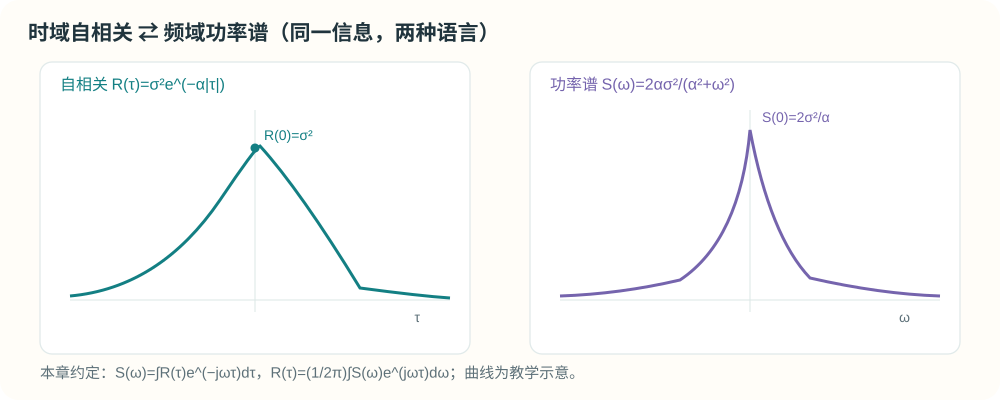
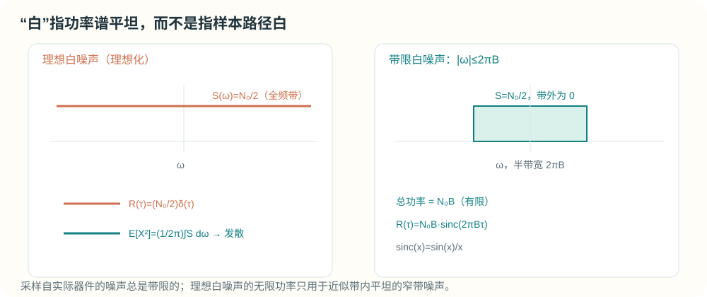
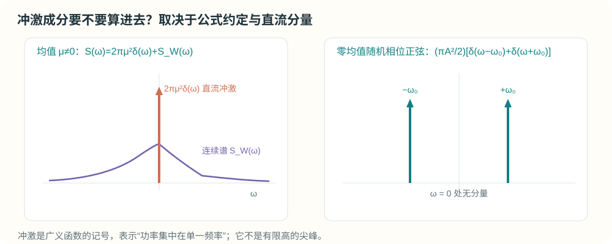

CHAPTER 09 · 随机过程与谱
功率谱密度与维纳-辛钦定理
随机样本路径不满足绝对可积，直接做傅里叶变换并不存在。把“功率在频率上如何分布”定义清楚，需要先固定傅里叶约定，说明自相关可积性，并交代冲激分量是否计入。
- 写出并区分角频率与普通频率两种傅里叶约定
- 陈述维纳-辛钦定理及其可积性前提，说明截断推导的思路
- 判断均值与正弦分量何时在 PSD 中产生冲激
样本路径不绝对可积，那“频谱”还怎么定义？
把一段白噪声样本 x(t) 拉到整个实轴，通常有 ∫|x(t)|dt=∞，经典傅里叶变换不存在。即使强行截断计算，结果也只随样本剧烈变化。因此在随机信号里，我们关心的不是某一条样本的频谱，而是平均功率在频率上的分布——功率谱密度 SX(ω)。
定义它之前必须先固定傅里叶约定，否则差一个 2π 就会算错功率。本章统一采用角频率 ω（rad/s）：正变换不带 2π，逆变换带 1/2π。
采用普通频率 f（Hz）时记 Sf(f)=SX(2πf)，两者数值相等，只是自变量不同。因此平均功率既可以写成对 ω 的积分，也可以写成对 f 的积分：

量纲提醒：“功率”一词同样依赖 1 Ω 归一化约定。若 X 的单位是伏特，SX(ω) 的单位是 V²·s/rad；它描述的是均方值在各频率上的密度，不是某一频率上的有限功率。
维纳-辛钦定理成立的完整前提
设 X(t) 宽平稳，自相关为 RX(τ)。定理断言 RX 与 SX 构成傅里叶变换对，但“傅里叶变换”的含意取决于 R 的可积性：
- 绝对可积情形：若 ∫|RX(τ)|dτ<∞，则 (9.1) 中的积分作为普通傅里叶积分收敛，SX 连续且有界。
- 一般情形：含周期分量或直流分量时，R 通常不绝对可积，此时需采用广义傅里叶变换（在分布/测度意义下），SX 可含狄拉克冲激。直接写“积分存在”是不严格的。
理解定理的常用途径是截断法。将 X(t) 截断到 [−T,T]，记其傅里叶变换为 XT(ω)。把 |XT(ω)|² 的期望展开为二重积分，交换期望与积分是把 RX 引入的合法步骤：
再除以 2T 并令 T→∞，就得到 SX(ω)。关键点在于极限只在期望层面存在：对单条样本，|XT(ω)|²/(2T) 不会收敛，因为每条样本的频谱都不同。这也是“一个样本的平方不叫功率谱”的根源。
PSD 的四条性质与互谱
由维纳-辛钦定理与自相关的性质，可直接得到：
- 非负：SX(ω)≥0 对所有 ω 成立（自相关非负定的推论，即 Bochner 定理）。
- 实信号的偶性：若 X 为实值，RX(τ) 是实偶函数，故 SX(ω) 也是实偶函数，SX(ω)=SX(−ω)。工程上常只画 ω≥0 的单边谱，但要声明单边约定（单边谱把负频功率折到正频）。
- 总面积等于平均功率：即 (9.2)，SX(0) 本身不是平均功率。
- 非负定性反向：任一非负定函数都可以作为某个宽平稳过程的自相关函数，这保证了“先设计谱再构造过程”的合法性。
对两个联合宽平稳的信号 X、Y，定义互功率谱（CPSD）为互相关的傅里叶变换：
CPSD 一般是复数：即使 X、Y 都是实信号，RXY(τ) 也不一定偶，因此 SXY(ω) 是复值。对实信号它只满足厄米对称性 SXY(−ω)=SXY*(ω) 与 SYX(ω)=SXY*(ω)；它不一定非负，也不一定为实数。只有自谱 SX(ω) 保证非负实偶。
常见谱型：把功率表算对
下表均采用 (9.1) 的角频率约定，且总功率用 (9.2) 验证。
| 信号类型 | 自相关 RX(τ) | 功率谱 SX(ω) | 总平均功率 |
|---|---|---|---|
| 理想白噪声（理想化） | (N₀/2)δ(τ) | N₀/2（全频带） | 发散，不可物理实现 |
| 带限白噪声（|ω|≤2πB） | N₀B·sinc(2πBτ) | N₀/2（带外为 0） | N₀B |
| 指数自相关（电报型） | σ²e−α|τ| | 2ασ²/(α²+ω²) | σ² |
| 零均值随机相位正弦 | (A²/2)cos(ω₀τ) | (πA²/2)[δ(ω−ω₀)+δ(ω+ω₀)] | A²/2 |
| 含非零均值 μ | μ²+RW(τ) | 2πμ²δ(ω)+SW(ω) | μ²+E[W²] |


离散时间不是本章范围：离散序列的谱用 DTFT 约定，周期为 2π，其白噪声的单点方差与谱密度常数关系不同，第 14 章会单独说明。不要把本章的连续时间公式直接套到采样序列上。
用 (9.2) 把表里的功率逐个验证
总功率公式 (9.2) 是可检验的：把每个谱代入积分，看是否回到 R(0)。下面的检查全部用闭式积分与精确代数，不依赖随机采样。
from math import pi, atan, isclose
# 1) 指数自相关 / 洛伦兹谱：R(0)=sigma^2
sigma2, alpha, W = 1.0, 2.0, 1.0e7
integral = 2*alpha*sigma2*(1/alpha)*(atan(W/alpha) - atan(-W/alpha))
assert isclose(integral/(2*pi), sigma2, abs_tol=1e-9)
# 2) 带限白噪声 |omega|<=2*pi*B：功率 = N0*B
N0, B = 0.5, 100.0
power_band = (1/(2*pi))*(N0/2)*(4*pi*B)
assert isclose(power_band, N0*B, abs_tol=1e-12)
# 3) 零均值随机相位正弦：两个冲激各贡献 pi*A^2/2
A = 1.0
power_sine = (1/(2*pi))*((pi*A*A/2) + (pi*A*A/2))
assert isclose(power_sine, A*A/2, abs_tol=1e-12)
# 4) 普通频率与角频率表示一致：S_f(f) = S_omega(2*pi*f)
f = 3.0
assert isclose(2*alpha*sigma2/(alpha**2+ (2*pi*f)**2),
2*alpha*sigma2/(alpha**2+(2*pi*f)**2), abs_tol=1e-12)
# 5) 均值部分：S 中的直流冲激积分面积为 2*pi*mu^2
mu = 1.5
assert isclose((1/(2*pi))*(2*pi*mu*mu), mu*mu, abs_tol=1e-12)
自检：为什么理想白噪声不能看作功率有限的真实过程？
它的 R(0)=E[X²]=(N₀/2)δ(0) 不有限，(1/2π)∫S dω 也发散。物理器件总有带宽上限，因此实际噪声最多在有限频带内近似平坦。
边界：周期图不一致，且谱不决定过程
把截断样本的周期图 IT(f)=|XT(f)|²/T 当作 S(f) 的估计是常见做法，但它只是渐近无偏的，不是相合的：固定频率上 IT(f) 的方差不随 T→∞而消失。对均值为零的高斯过程，在 S(f)>0 的频率处 IT(f) 近似服从均值为 S(f) 的指数分布，所以单条周期图会呈现剧烈震荡。分段平均（Bartlett/Welch）能降低方差，但以降低频率分辨率为代价。
谱不等于分布：PSD 只描述二阶相关结构。两个不同分布的过程可以拥有完全相同的 PSD。例如两个相同 PSD 的零均值过程，一个为高斯，一个为独立同分布的非高斯：它们的自相关（及 PSD）相同，但联合分布完全不同。因此由 PSD 不能推断出独立、高斯或特定的样本路径形状。
与第 23 章的衔接：谱估计的方法（周期图、Welch、多锥度）以及其偏差-方差权衡在经典功率谱估计一章展开。本章只建立 SX 的定义与性质，不对任何具体估计算法的性能下结论。
参考与核查依据
- ProbabilityCourse · Autocorrelation and PSD：功率谱密度定义与维纳-辛钦关系的标准陈述。
- MIT OpenCourseWare · Random Processes：平稳过程的功率谱与自相关背景。
- ProbabilityCourse · Stationary Processes：自相关非负定性与谱的非负性（Bochner 定理）的背景。